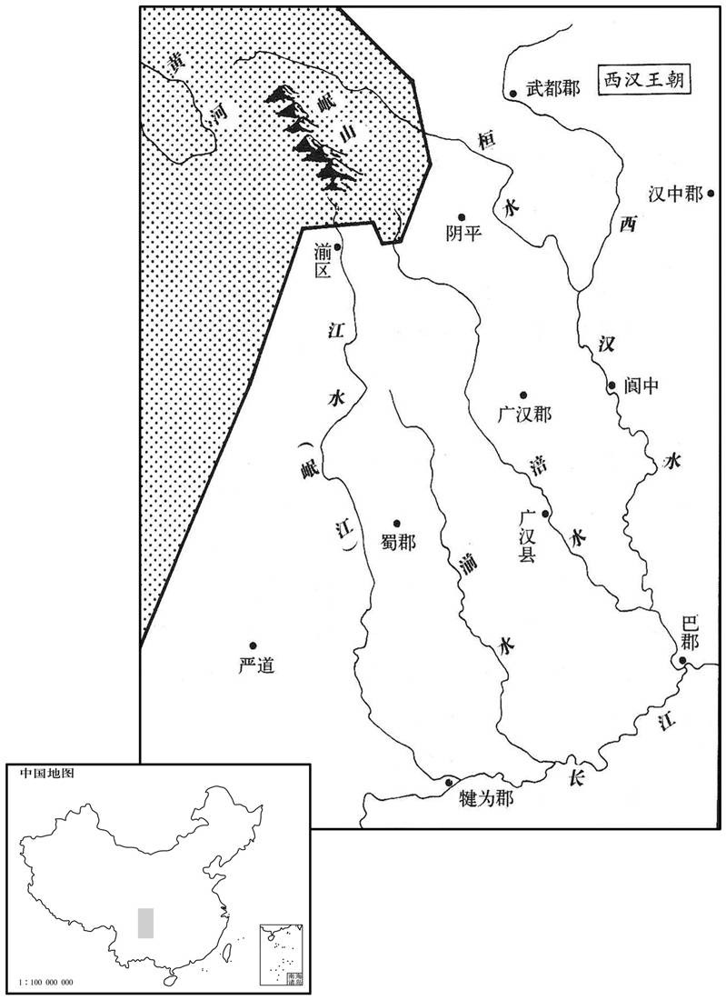
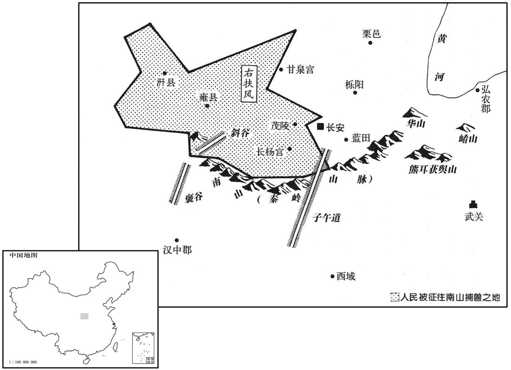

公元前10年资治通鉴：本年记事、原文与白话对照
按原书编年位置阅读；追叙和史论不等于本年发生的事件。白话采用所据译本，缺译不以生成译文补齐。
卷32 · 本年记事
公元前10年 · 汉孝成皇帝永始三年
三年〔（辛亥、前一○）〕

本年形势与背景参考图

本年形势与背景参考图
春，正月，丙寅，蜀郡岷山崩，〔地理志，岷山，在蜀郡湔氐道西徼外。禹贡所谓岷山导江，即此山也。水经注曰：岷山，即渎山，水曰渎水，亦曰汶阜山，在氐道徼外，江水所导也。大江泉源发羊膊岭下，缘崖散漫，小大百收，殆未滥觞，东南下百余里，至白马岭西，历天彭关，亦谓之天谷。天彭山两山相对，其高若阙，谓之天彭门。江水自此以上至微弱，所谓其源滥觞者也。汉元延中，岷山崩，壅江水三日不流，即其处。岷，音武巾翻。〕壅江三日，江水竭。刘向大恶之，〔恶，音乌路翻；恶其征异也。〕曰：「昔周岐山崩，三川竭，而幽王亡。〔周幽王二年，三川竭，岐山崩。师古曰：三川，泾、渭、洛也。洛，即漆、沮也。余按幽王时有是异，后卒为犬戎所杀。〕岐山者，周所兴也。〔周自太王避狄去豳，而邑于岐山之下，周之王业遂兴于此。〕汉家本起于蜀、汉，〔高帝始王汉中，起兵还定三秦，诛项羽，遂有天下。〕今所起之地，山崩川竭，星孛又及摄提、大角，从参至辰，〔天文志：房南众星曰骑官，左角理，右角将。大角者，天王帝�之吽A其两旁各有三星鼎足句之，曰摄提。摄提者，直斗杓所指，以建时节，故曰摄提格。晋天文志：参十星，于辰在申。至辰者，至大火也。自氐五度至尾九度，为大火，于辰在卯。如淳曰：孛星尾长及摄提大角，始发于参至辰也。孛，蒲内翻。参，疏簪翻。〕殆必亡矣！」
春季，正月，丙寅（初十），蜀郡岷山发生山崩，土石堵塞长江达三日之久，下游江水枯竭。刘向对此异常现象非常厌恶，说：“从前，周朝时，岐山发生山崩，三条河川都枯竭了，结果周幽王被杀。岐山是周朝的兴起之地。汉朝本由蜀、汉兴起，而今初兴之地山崩川竭，彗星长尾又扫过摄提、大角，从参宿一直走到辰宿的位置。汉朝恐怕一定要亡了。”
二月，丙午，封淳于长为定陵侯。〔恩泽侯表，定陵侯，国于汝南。〕
二月，丙午（二十日），封淳于长为定陵侯。
三月，上行幸雍，祠五畤。
三月，成帝前往雍城，在五祭祀。
上将大夸胡人以多禽兽，秋，命右扶风发民入南山，西自褒、斜，〔师古曰：褒、斜，南山二谷名。余按自秦川径南山通汉中，南谷曰褒，北谷曰斜，径五百里。斜，余遮翻。〕东至弘农，〔长安南山连延，东至弘农，今商、虢二州之山皆是也。〕南驱汉中，〔驱，与驱同。〕张罗罔罝罘，〔罔，与网同，古字通用。罝，音咨邪翻，兔礶也。罘，音房尤翻，翻车大网也。〕捕熊罴禽兽，〔熊似豕而大，黑色。罴似熊，黄白色，被发人立，而绝有力。〕载以槛车，输之长杨射熊馆，〔师古曰：长杨宫中有射熊馆。〕以罔为周阹，〔李奇曰：阹，遮禽兽围陈也。师古曰：阹，音祛。〕纵禽兽其中，令胡人手搏之，自取其获，上亲临观焉。〔考异曰：成纪，「元延二年冬，行幸长杨宫，从胡客大校猎，宿萯阳宫，赐从官。」胡旦用之。按扬雄传：祀甘泉、河东之岁，十二月，羽猎，雄上校猎赋；明年，从至射熊馆还，上长杨赋。然则从胡客校猎当在今年；纪因去年冬有羽猎事，致此误耳。〕
成帝准备在胡人面前夸耀自己有很多禽兽，秋季，命令右扶风发动百姓进入南山，西自褒、斜二谷，东到弘农，南达汉中，张设罗网，捕猎熊罴等禽兽，用槛车装运至长杨宫射熊馆，用网围成围障，把禽兽放到里面，命胡人赤手与野兽搏斗，杀死的野兽归斗兽人所有。成帝亲临观看。